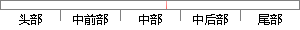

。大部分有机物或金属氧化表面的发射率都在0.85~0.98之间[ 55 ]，光洁金属表面的 辐射率 很低， 如果物体 的表面
片段位置图

相似结果
相似片段：
长下的实际物体与黑体的单色辐射出度之比，所以亦称比辐射率。它是表征物体辐射本领的重要热物性参数，发射率越大，物体表面的辐射能力越强。大部分有机物或金属氧化表面的发射率都在0. 85～0. 98之间。光洁的金属表面或抛光的物体发射率很低。带钢的种类、表面粗糙度、理化结构和材料厚度都是影响发射率的主要因素，所以为了准确测定温度应正确设置不同测量点的发射率，这样才能使测得的带钢表面温度
| 对比库： | WriteCheck云资源库 |
| 来源： | pm.irs.cn 查看来源 |
| 发布时间： | 2013-02-07 |
| 相似率 | 73.91% （轻度抄袭） |